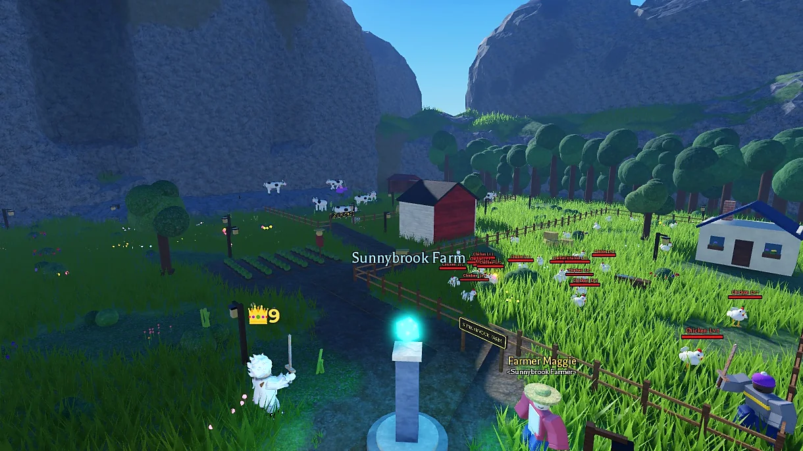

The Herald's Field Guide: Surviving Your First Hour
Herald Bartholomew's advice for brand-new adventurers, condensed so you can read it before the chickens notice you.
 Posted by Luthinor Games, with commentary from Herald Bartholomew
Posted by Luthinor Games, with commentary from Herald Bartholomew
Every adventurer in Lionsgate starts in the same place: at the bottom, holding a rusty sword. Here's how to make your first hour count.
1. Farm first, fight second
Start at Sunnybrook Farm. Chickens first, then the cows in the pasture west of the barn, which are tougher and worth more XP. Do every quest Farmer Maggie gives you. Farm animals stop giving XP once you hit level 5, so that's your cue to head to Greenhollow Vale and start on the goblins.
2. Learn the combo
Every weapon has a four-hit combo: three swings and a finisher. Monsters rest after a flurry of attacks, and that's your opening. If you have a shield, raise it just before a hit lands for a perfect guard. If you don't, learn to roll: you can't be hurt mid-roll.
3. Press C. Often.
New gear goes on automatically when a slot is empty, but upgrades don't. Check the Character panel every time something drops and equip the best you've got. Spend your two attribute points every level, too.
4. Protect your stuff
Death costs half your XP, your gear, your renown, your potions and your quest progress. Your gold is always safe. So:
- Keep a few diamonds saved. Buying your gear back costs 10.
- Put gear you love in the Royal Bank. Everyone gets 3 free supply slots for potions and ammo.
- Bind your favorite piece at the Soul Shrine by the fountain. It survives your next death.
- Don't wear anything you can't afford to lose into the Colosseum. The winner there takes everything.
5. Watch the King
The panel in the top right shows the King's Tax and the coffers. When the coffers get fat, the King gets nervous, and everyone else gets ideas. You won't take the crown in your first hour. But you'll know exactly who to aim for when you're ready.
Want the full guide? Herald Bartholomew wrote everything he knows, and it's a lot.
The crown is waiting.
King or Skum? is free to play on Roblox.